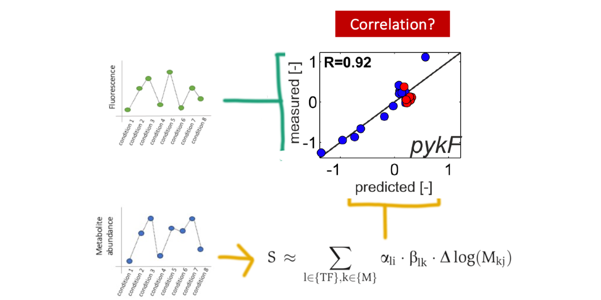
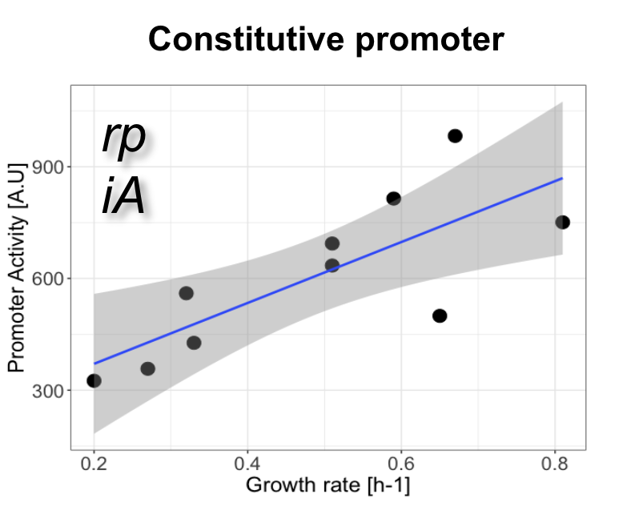
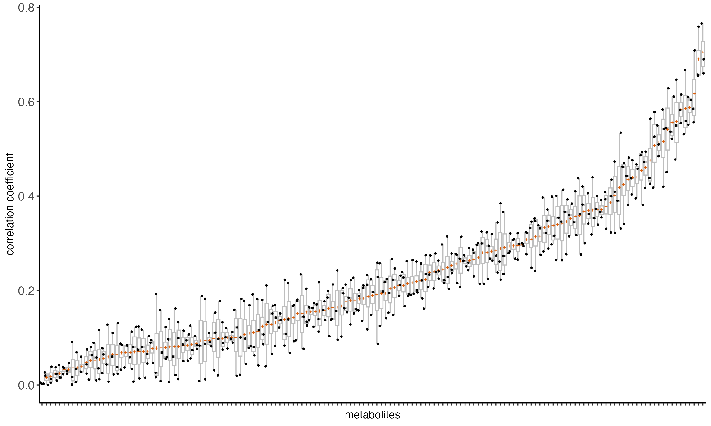
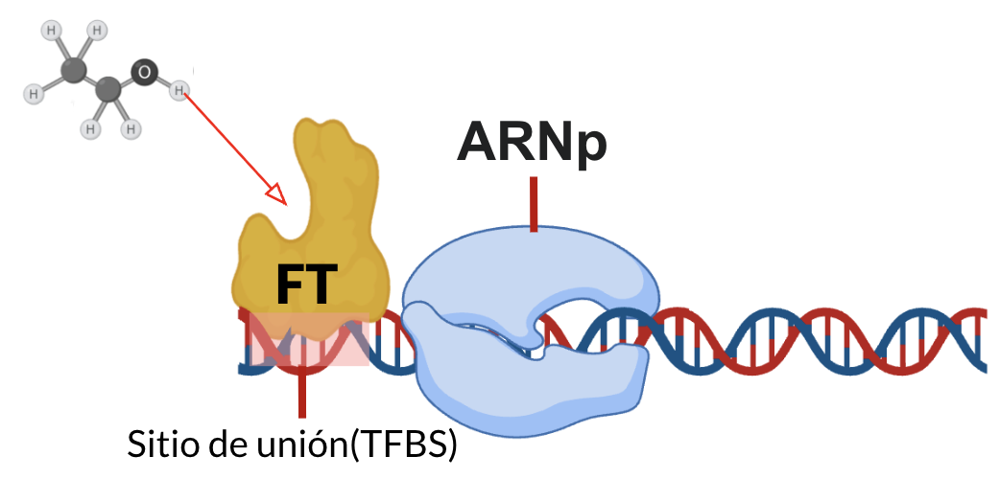
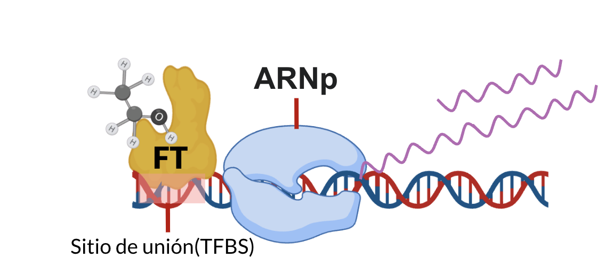

Signaling Metabolites in Transcriptional Regulation

Integrating metabolomics and transcriptomics to uncover regulatory signals
This project aimed to identify signaling metabolites involved in transcriptional regulation by integrating metabolomic and transcriptomic data. The main model system was Escherichia coli, used as a reference regulatory network, with a conceptual extension toward symbiotic regulation in Rhizobium phaseoli–Phaseolus vulgaris.
The central hypothesis was that metabolites correlated with transcription factor (TF) activity can be detected through ranked metabolite–gene correlations and contextualized using pathway enrichment analysis (PEA). This approach enables the systematic discovery of metabolite–TF–gene relationships under physiologically relevant conditions.
Project Gallery



Transcription Factors as Metabolic Sensors
Transcription factors (TFs) are regulatory proteins that bind DNA to control gene expression. In bacteria, many TFs also bind small metabolites, which act as environmental signals that activate or repress transcription.
In E. coli K-12, approximately 300 TFs have been identified, and nearly 50% contain metabolite-binding domains, suggesting a large number of regulatory interactions remain undiscovered. This regulatory logic provides a powerful framework to explore signal transduction through metabolism.


Objective
To apply and validate the correlation-based framework in E. coli by:
- Ranking metabolites based on their average correlation with TF-regulated genes
- Performing pathway enrichment analysis using KEGG compound annotations
- Identifying pathways recurrently enriched across multiple transcription factors
This objective resulted in a prioritized set of metabolic pathways and candidate signaling metabolites linked to transcriptional regulation.
Results Overview
The pipeline was first applied to a reference dataset involving three well-characterized transcription factors (TFs), each associated with a defined set of regulated genes:
- ArgR
- TyrR
- CysB
Subsequently, the same analytical workflow was applied to a second, independent experiment involving a broader and more diverse set of transcription factors, including:
- PgrR
- MarA
- DecR
- CecR
- MngR
- MlrA
- MetJ
- Lrp
- Cra
This step was critical to demonstrate that the pipeline is transferable across experimental conditions and regulatory contexts, reinforcing its potential applicability beyond the initial proof-of-concept system.
Enrichment Analysis of ArgR correlated metabolites
Key Outcomes
- Systematic ranking of metabolites associated with TF activity
- Identification of enriched metabolic pathways linked to transcriptional regulation
- Comparative analysis between full databases and experimentally measured metabolites
- A scalable computational framework adaptable to non-model organisms
Perspectives
Phaseolus vulgaris (common bean) is the most widely consumed grain legume worldwide and the most important legume for human consumption in Mexico. It contributes 22–25% protein content and represents a substantial fraction of daily protein intake.
Like most legumes, P. vulgaris establishes a symbiotic association with nitrogen-fixing bacteria, reducing dependence on chemical fertilizers and improving soil fertility.
As a perspective, the validated framework can be extrapolated to Rhizobium phaseoli, a symbiotic bacterium associated with Phaseolus vulgaris. By integrating transcriptomic and metabolomic profiles under symbiosis-related conditions, this approach could reveal metabolites involved in early signaling events during nodulation.
This extension would leverage homology-based regulatory networks and comparative genomics to adapt the E. coli model to a symbiotic context.
A further perspective is the identification of symbiosis-specific regulatory mechanisms, where metabolite–TF interactions drive the expression of genes involved in nodulation and nitrogen fixation.
By mapping correlated metabolite–gene pairs onto transcriptional networks, this strategy could uncover regulatory signals beyond well-characterized flavonoid–NodD interactions, expanding our understanding of metabolic control in symbiosis.
Symbiotic interaction between Phaseolus vulgaris and Rhizobium spp.
Academic Context and Role
Functional regulation lab at CCG, UNAM
This project was carried out during my research stay at the Centro de Ciencias Genómicas (CCG–UNAM) as part of the Computational Genomics Program. The work was conducted within the Laboratory of Functional Regulation in Bacteria, under the supervision of Dr. Daniela Ledezma-Tejeida.
In particular, my contribution focused on the application of an already validated computational pipeline for metabolite–TF association analysis. Rather than developing the methodology from scratch, my work consisted of deploying, adapting, and evaluating the pipeline across independent experimental datasets, ensuring its robustness and reproducibility.
My role in this project was as a research assistant, contributing primarily to:
- Computational analysis and pipeline development
- Metabolite–gene correlation analysis
- Pathway enrichment analysis
- Interpretation of results within regulatory network frameworks
Conclusion
This project demonstrates how multi-omics integration can uncover hidden layers of transcriptional regulation mediated by metabolism. Beyond E. coli, the framework provides a foundation for studying regulatory signaling in symbiotic systems such as Rhizobium–legume interactions, with potential applications in sustainable agriculture and microbial engineering.
References
Secretaría de Agricultura y Desarrollo Rural. Estima Agricultura crecimiento de 11.4% de la producción de frijol en 2021.
Aguirre-Noyola, J. L., M. Rosenblueth, M. G. Santiago-Martínez, and E. Martínez-Romero. Transcriptomic Responses of Rhizobium phaseoli** to Root Exudates Reflect Its Capacity to Colonize Maize and Common Bean in an Intercropping System.** Frontiers in Microbiology 12 (2021). https://doi.org/10.3389/fmicb.2021.740818.
Martínez, E., R. Palacios, and F. Sánchez. Nitrogen-fixing nodules induced by Agrobacterium tumefaciens** harboring *****Rhizobium phaseoli***** plasmids.** Journal of Bacteriology 169 (1987): 2828–2834. https://doi.org/10.1128/jb.169.6.2828-2834.1987.
Hernández-Benítez, Ericka M., Esperanza Martínez-Romero, José Luis Aguirre-Noyola, and Daniela Ledezma-Tejeida. Putrescine Acts as a Signaling Metabolite in the Transition from Nodulation to Nitrogen Fixation in Rhizobium phaseoli. bioRxiv, January 29, 2024. https://doi.org/10.1101/2024.01.29.577838.
Kochanowski, Karl. Few Regulatory Metabolites Coordinate Expression of Central Metabolic Genes in Escherichia coli. Molecular Systems Biology (2017).